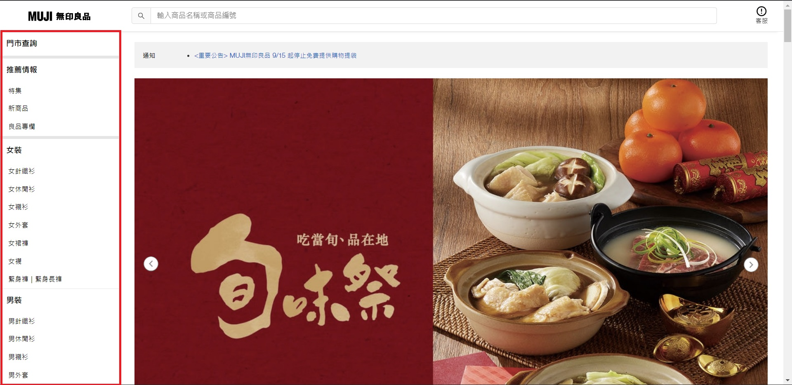
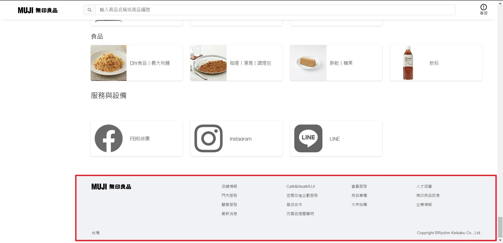
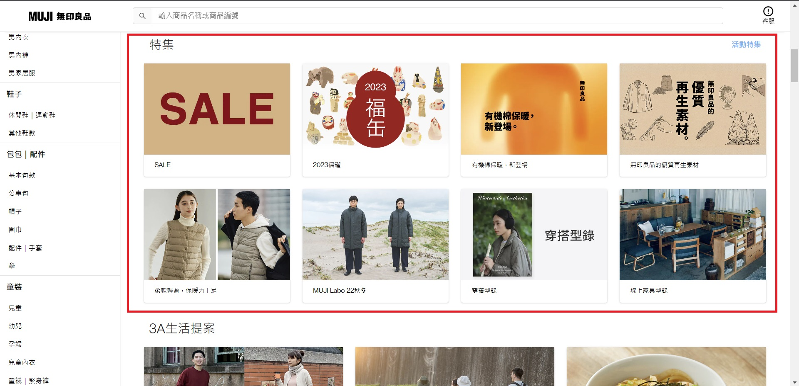
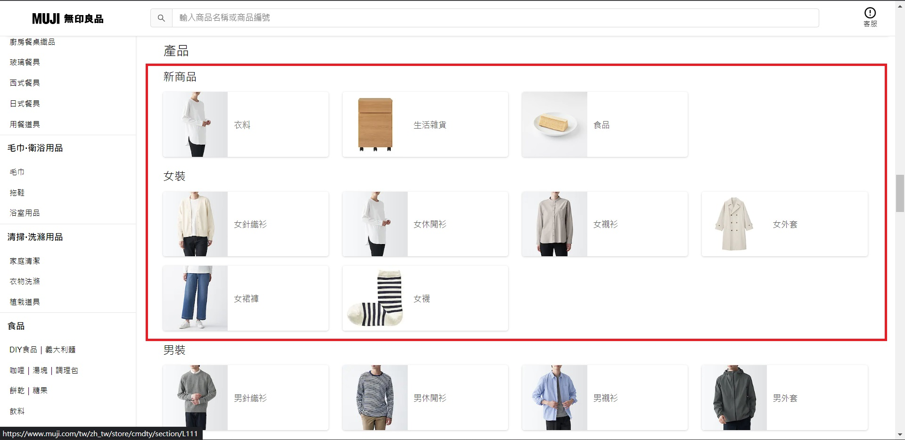
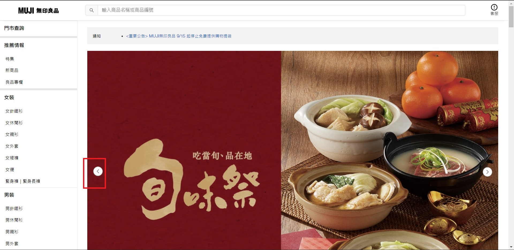

星座/MBTI
首頁
星座
土象
魔羯
金牛
處女
風象
水瓶
雙子
天秤
水象
雙魚
巨蟹
天蠍
火象
牡羊
獅子
射手
MBTI
MBTI起源
字母意思
16種人格
測驗
網站架構
推薦網站
Search
(點擊圖片進入官網!!)

導覽頁

頁尾
搜尋

卡片

卡片2

輪播
Previous
Next
Next
Next
Next
Next
導覽列
頁尾
搜尋
卡片
輪播
無印良品的網站在左邊有一排導覽列，能從那邊快速找到自己想要的商品， 不過因為他們的商品很多所以如果再多增加巢狀按鈕，就能更細項的分類商品，查找也會更迅速方便。
在頁尾時也附上各社交媒體的帳號方便消費者追蹤各種資訊
搜尋功能是最常見也是最方便的功能，能直接搜尋關鍵字，快速找到想要的東西!
在商品欄的部分也使用卡片的功能呈現
在主畫面就會看到輪播效果，讓消費者快速知道熱門的商品。